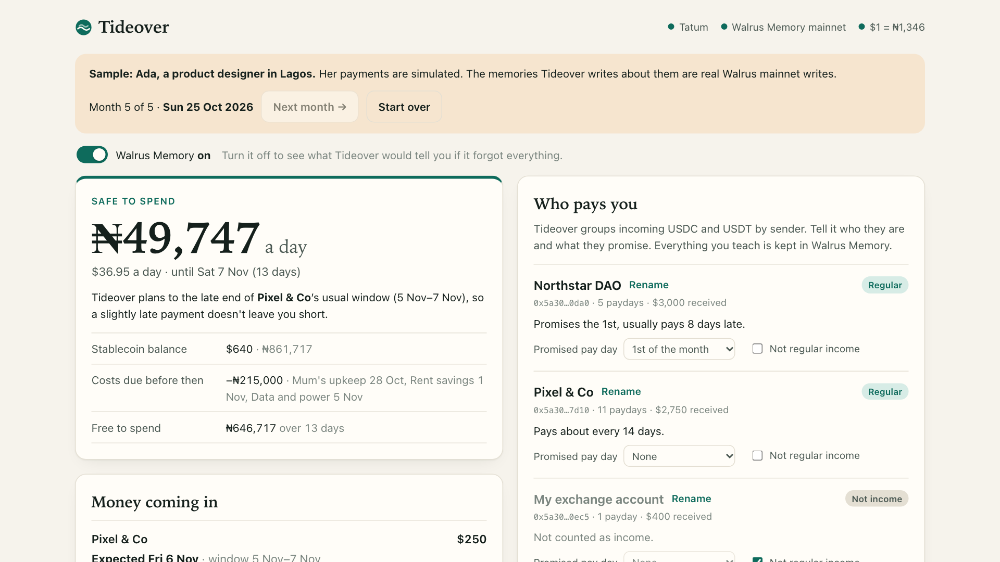
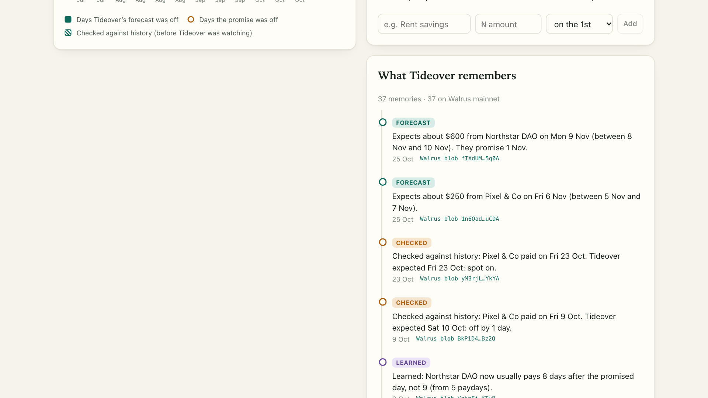

Tideover: an app that learns when my crypto pay really arrives
I live in Lagos and I'm paid in stablecoins. Some of that money arrives on time. A lot of it doesn't. A stipend that's "paid on the 1st" lands on the 9th, or the 11th, or after I've chased it for weeks. I've waited months for pay I was promised.
Budgeting apps don't help with this. They assume a salary that arrives on the same day every month. When your income is irregular, the question isn't "what's my budget?" It's "how much can I spend each day until the next money actually lands?"
So for the Tatum × Walrus Total Recall hackathon I built Tideover. It watches a Sui wallet, learns when each payer really pays, and remembers what it learns in Walrus Memory, so it gets sharper every month.

What it does
You paste a Sui address (or a name.sui). Tideover reads your recent incoming USDC and USDT, groups the payments by who sent them, and shows you:
- Safe to spend: how many naira you can spend each day until the late end of your next payment window, after setting aside the monthly costs you've told it about (rent savings, data and power, money for family) that fall due before then.
- Money coming in: for each regular payer, when they promised to pay and when Tideover actually expects the money: "Promised 1 Nov. Expected Mon 9 Nov, between 8 and 10 Nov."
- How Tideover is improving: how many days each forecast was off, next to how far off simply trusting the promise would have been.
- What Tideover remembers: every memory, with a link to its Walrus blob.
You teach it by naming payers, setting the day they promise to pay, marking one-off money (a bounty, a transfer from your own exchange account), and adding your monthly costs. Each of these is a memory.
How it uses Tatum
Every chain read goes through Tatum, on the server, so the API key never reaches the browser.
Sui has deprecated JSON-RPC on public full nodes, and Tatum's Sui mainnet gateway now serves GraphQL. One query to sui-mainnet.gateway.tatum.io/graphql returns the wallet's stablecoin balances, its SuiNS name and its recent transactions with their balance changes. Tideover pages back through up to 200 transactions and keeps only stablecoin money that someone else sent in. A second query looks up the SuiNS names of the people who paid.
The naira amounts use Tatum's Data API exchange rate (symbol=USDC&basePair=NGN), so the numbers are in the currency I actually spend.
How it uses Walrus Memory
Tideover has no database. Everything it learns lives in Walrus Memory on mainnet, written through the official @mysten-incubation/memwal SDK, one namespace per wallet. It keeps four kinds of memory:
- What you taught it: "You said Northstar DAO promises to pay on the 1st of each month."
- Forecasts: "Expects about $600 from Northstar DAO on Thu 9 Jul (between 6 and 12 Jul)."
- Grades: "Northstar DAO paid on Sat 11 Jul. Tideover expected Thu 9 Jul: off by 2 days. Going by the promise (1 Jul) would have been off by 10 days."
- Lessons: "Learned: Northstar DAO now usually pays 9 days after the promised day, not 8."
Each memory is a plain English sentence followed by a tagged JSON copy of the record. The sentence makes semantic recall work and lets a person read it. The JSON lets Tideover rebuild its state exactly. When you open a wallet, Tideover recalls everything in that namespace and picks up where it left off, on any device.
The part I like most is the Walrus Memory switch. Turn it off and Tideover acts as if it remembered nothing: payers go back to raw addresses, the promises and costs disappear, the track record is gone, and the "safe to spend" number changes. That's the clearest way I found to show what the memory is worth.

How it learned over time
The learning loop is a single pure function, and it's tested. Before each payday it looks for the forecast it made beforehand: first in Walrus Memory, otherwise by working it out from earlier history, which the app marks as "checked against history". It grades that forecast, learns from the payday, writes any lesson to memory and makes a fresh forecast.
In the five-month sample (Ada, a fictional designer in Lagos, with simulated payments), after one lesson ("the DAO says it pays on the 1st"):
| Payday | Promise off by | Tideover off by |
|---|---|---|
| 11 Jul | 10 days | 2 days |
| 8 Aug | 7 days | 2 days |
| 10 Sep | 9 days | 1 day |
| 9 Oct | 8 days | 1 day |
The forecast window also narrows, from three days either side after the first payday to one day after four. That run wrote 37 memories to Walrus mainnet.
My own Sui wallet is new, so it has no pay to learn from yet. Tideover reads it live through Tatum, finds no stablecoin income, and plans a month ahead until the first payday lands. From then on it starts forecasting and grading itself the same way.
What I'd do next
- Read income in more coins, priced through Tatum.
- Warn you a day before a payer's usual window, and tell you when someone is later than their own normal.
- Let you share a payer's track record with them, politely.
Thanks to Tatum and the Walrus Foundation for running Total Recall. The code is MIT-licensed on GitHub.